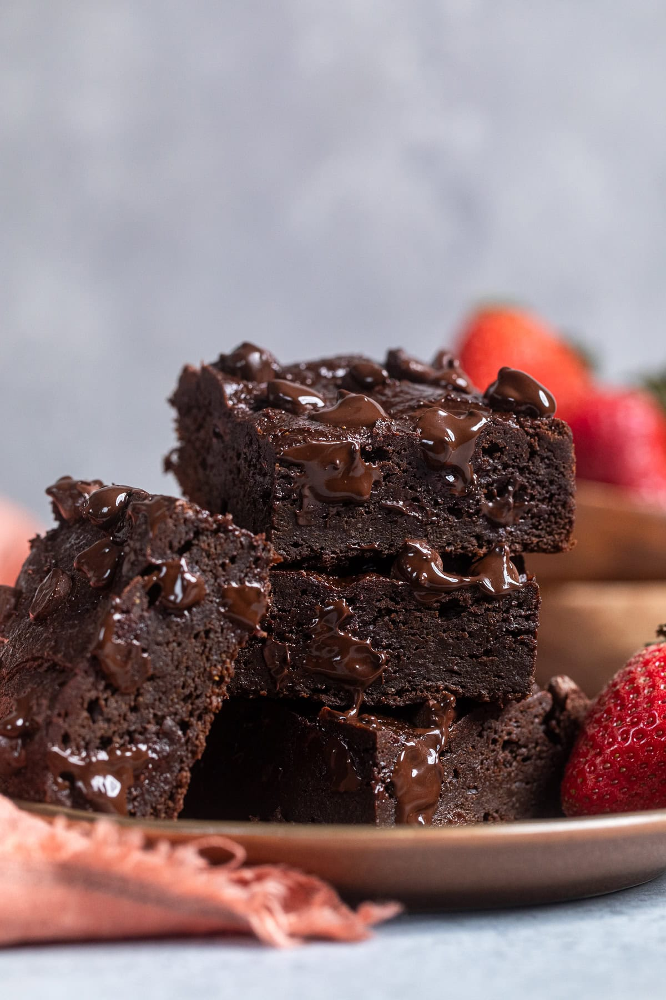

Brownie Recipe

Description
This is a rich and fudgy brownie recipe that you can make at home.
Ingredients
- 1/2 cup (1 stick) unsalted butter
- 1 cup granulated sugar
- 2 large eggs
- 1 teaspoon vanilla extract
- 1/3 cup unsweetened cocoa powder
- 1/2 cup all-purpose flour
- 1/4 teaspoon salt
- 1/4 teaspoon baking powder
Instructions
- Preheat oven to 350°F (175°C). Grease a 9x9 inch baking pan or line it with parchment paper.
- In a medium saucepan, melt the butter over low heat. Remove from heat and stir in sugar, eggs, and vanilla extract until well combined.
- In a separate bowl, whisk together cocoa powder, flour, salt, and baking powder. Gradually add the dry ingredients to the wet ingredients, stirring until just combined.
- Pour the batter into the prepared baking pan and spread it evenly.
- Bake for 20-25 minutes, or until a toothpick inserted into the center comes out with a few moist crumbs. Be careful not to overbake, as brownies are best when they are fudgy.
- Allow the brownies to cool in the pan before cutting into squares. Enjoy!
Back to Home